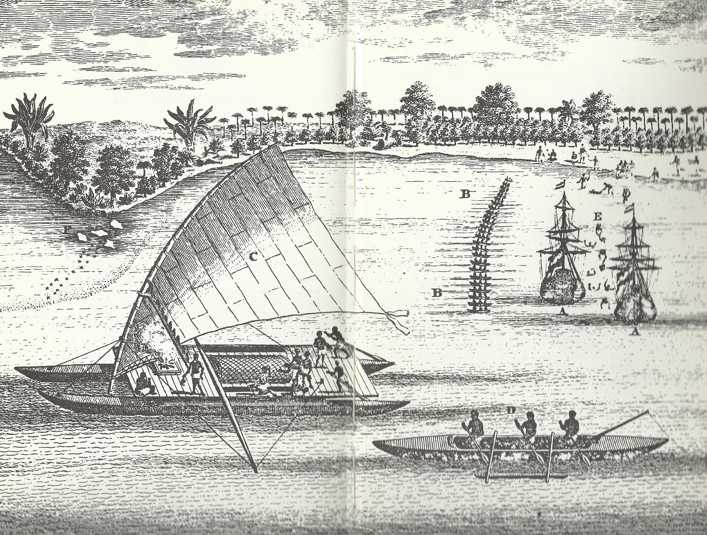

Ancient navigators sailed around the globe without modern techniques such as GPS, while many people today couldn't get to the stores without it, so how exactly did these ancient navigators position themselves?
The concept of bird navigation is quite simple in that the captains of the boats would simply follow the migratory patterns of certain birds. Cuckoo’s led to New Zealand, Pacific Golden plovers led to Hawaii (Valley Isle Excursions). Crews would also bring along birds that would refuse to land on water. This was so that they could release the birds and if the birds returned, there would be no land in sight, but if the birds did not, land was close by (Thompson).
Stars were incredibly important to polynesian navigators as well. Near the equator, the night sky rarely changes seasonally, so each star has a specific path that can be followed. Navigators would measure the elevation of the star with their hands and fingers and that would tell them a specific latitude, that latitude would be attached to an island that the navigators would have memorized. Later they developed star compasses to use for this purpose (Thompson).
Navigators would also use the changes in the ocean swells to determine whether they were close to land or not. Waves would be a product of an island or some other land mass close by. They would memorize how different island shapes and types would affect the water and the way it moves and use that to determine location or course correction if necessary. They also used the reflection of the seafloor on the bottoms of clouds to help navigate once they started to approach their destination (Valley Isle Excursions).
In Mediterranean navigation, the rutter and a portolan or chart was used to determine the compass course. This was done by using wind roses and rhumb lines from the charts that had a constant magnetic bearing. The navigators would use the rhumb lines and the wind-rose they were on to determine the location but this would not always work because there may not be an appropriate wind-rose. If that were the case, a ruler and dividers were used to relate the line of the desired course to a nearby rhumb line. A pilot book would then be used as reference to determine the distance from the nearest rhumb line. As always, landmarks and interlinking maps were incredibly helpful in the process (Law 6).
This method of navigation hardly used charts. These navigators would often depend heavily on the magnetic compass and the rutter, in tandem with the lead line, which was a way to measure the depth of the ocean floor (Law 6). This was because, unlike in the mediterranean, the open ocean has a rising and falling tide, and it is important for a navigator to know how much water lies between the bottom of his ship and the sea floor. In addition to the tides, the sea floor was not easily seen in the open ocean and therefore landmarks were far more difficult to determine than in the Mediterranean. The lead and line were very useful in this sense because they did not depend on good visibility and were easy to use in shallower waters such as the northern atlantic shore (Law 6).
What methods Ahab used and the history behind them
""Curse thee, thou quadrant!" dashing it to the deck, "no longer will I guide my earthly way by thee; the level ship's compass, and the level deadreckoning, by log and by line; THESE shall conduct me, and show me my place on the sea”" (Melville).
IMPORTANCE OF QUADRANTS: Quadrants were wood or brace, quarter circles that had different angle markings on the curved edge. The user would look through a peep-hole at the sun or polaris and determine the angle using a plumb line. The angle indicated by the plumb line usually corresponds with a line on a map. Quadrants were incredibly helpful in determining longitude and latitude (Isil).
“It might seem an absurdly hopeless task thus to seek out one solitary creature in the unhooped oceans of this planet. But not so did it seem to Ahab, who knew the sets of all tides and currents” (Melville).
Furthermore, Melville also makes reference to this chart created by Lieutenant Maury which charts the migration of whales.
IMPORTANCE OF CHARTS: Nautical charts are incredibly important for navigation because it provides the navigator with loads of information about the shape of the shoreline, the depth of the ocean at certain parts, locations of potential dangers, and important anchoring locations for the vessel. Without charts, ships would be lost at sea with no idea what to look for (NOAA).
In this chapter, the Pequod and the crew had just experienced a storm and, because of the storm, the compass needle was indicating that the ship was headed east. However, the ship was actually heading west. Ahab then calls for the crew to bring him objects so that he can make a compass himself “that will point true as any” (Melville).
IMPORTANCE OF COMPASSES: The magnetic compass is a tool designed to always point north. This was particularly useful when clouds blocked out the sun or the north star. Knowing north allowed navigators to know the rest of the cardinal directions and determine which direction they were heading (Calvo).
“It is noon; and Dough-Boy, the steward, thrusting his pale loaf-of-bread face from the cabin-scuttle, announces dinner to his lord and master; who, sitting in the lee quarter-boat, has just been taking an observation of the sun; and is now mutely reckoning the latitude on the smooth, medallion-shaped tablet, reserved for that daily purpose on the upper part of his ivory leg” (Melville).
IMPORTANCE OF CALCULATIONS: Without knowing how to perform all the correct calculations, the readings from all the aforementioned technologies are completely worthless. Furthermore, it is significant that Ahab performs these calculations on his whalebone leg. This firmly ties him not only into the world of the whales, but into the beyond on his maddened quest for revenge.
From 1990 to 1994 my father, Christopher Fernandez, served as a navigator onboard the Spruance-class destroyer USS Nicholson in the United States Navy. He explained all the navigation methods employed by the navy to orient their ships. He is second from the left in this photograph.
While my father was in the U.S. Navy, the main method of navigation was still paper charts, just like ones Ahab would have used. He surmises that some newer ships would have more computer systems, but that ships would at the very least have backup paper charts. While My father said they most often used known current charts and some simple calculations to figure out where they are. This technique is called dead reckoning. The distance gone combined with the estimated drift due to the currents would be used to figure out where they currently were. as opposed to the veins whales swim in, this technique was known and accepted to often be inexact. However, my father stated that when they were in the middle of the Atlantic with nothing around, it did not matter if they were a few miles off from where they thought they were. To figure out where they wanted to be, gnomonic charts, which gave the shortest path between two points on a glove, were common.
The technique Ahab uses when making calculations on his whalebone leg is known as local apparent noon, and was also used. Local apparent noon may be even more inexact than dead reckoning though, so while still an option, it was not commonly used.
While many advancements have been made to prevent things such as the lighting strike which messes with the compass onboard the Pequod, that does not mean there are no longer technological issues. Occasionally the engines onboard the USS Nicholson would just give out. Without the engines, there was no power onboard the boat. This meant dead reckoning, local apparent noon, and celestial navigation were basically the only options for the time being, just as if they were back in the time of Melville.
While Melville likes bending time and adding ambiguity, the navy did not. They recognize that to navigate accurately you need super accurate clocks. The team under the command of the navigator had to wind a super accurate chronograph each day and log that this task was done.
Since Melville's time, advancements in in compass technology have come a long way. The magnetic compass on the ship had two large steel balls around it which would be moved to calibrate the compass in order to prevent interference due to metals on the ship as well as things such as lightning strikes. Furthermore, in addition to traditional magnetic compasses gyro compasses were used to find true north.
Command structures onboard ships have also changed over time. Besides lower officers getting more time to eat, most of this change can be seen as a diffusion of responsibilities. Rather than just the captain navigation, my father was there just beneath the captain. But even more than jsut my father, as mentioned before, he had a team of navigators under him. Most of the time while out to sea niether him or the captain would actually be on the bridge. Instead my father would leave written orders signed by the captain for whoever was up there. Then if anything important happened they could call him up. Coming into port was a whole ordeal and it is where the differences really stand out. Instead of just one person such as Ahab calling the shots, there were many many people to check and recheck everyone to catch any little errors. The whole navigation team would be at the bridge, the port would often provide a pilot to help guide the ship in, the helmsman would have a helm safety officer to make sure the helmsman actually turned the ship the correct amount of degrees and to the direction ordered. The one command dynamic I noticed stayed the same was how possesive people were over their role and how afraid they were of losing command. My father to this day was upset when talking about the pilots coming onboard because they became a new person that could overrule him and some were "idiots" that "didn't know how to steer his ship".
The biggest and most obvious differences in navigation between modern day and what Ahab had available is GPS and radio navigation. When sailing along the coast radar would be used to position themselves relative to the coast. If near a port, there were sometimes even buoys with radar reflectors that would reflect morse code to this ship in order to indicate which port exactly they were at. Getting further out Loran-C radio navigation was used. Loran-c was a long range, highly accurate hyperbolic radio system which allowed the ship to communicate with land based radio beacons to determine their position. Finally, when far out at sea GPS was used. However during the time my father was in the navy GPS only would give a read out of latitude and longitude, which then had to be placed on a paper map.
A whole new way of orienting ourselves in time and space
This whole time you have just been scrolling down the page to read our essay. I'm willing to bet that feels pretty natural. If you've ever used a social media application such as Instagram, Facebook, Twitter, TikTok, etc. you will know that you can just infinitely scroll down your timeline, just like you have been for this paper. It is not a coincidence that all the major sites have this same feature. They do it because of the specific way this type of page navigation orients a viewer in space and time. With infinite scrolling there are no markers to remind a viewer how much content they have gone through or how much time they have spent on the app. Right now you most likely think that our paper is shorter than you would if it was perfectly delineated by page breaks as in a normal word document. For reference, the google document full of text for this website was ten pages long. Pay attention to how this changes and how much more you are aware of length when from here on out you have to click to another page after every paragraph.
Next Paragraph